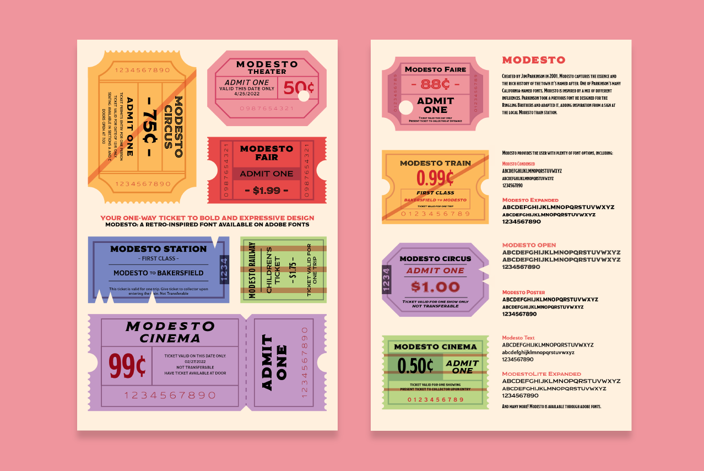
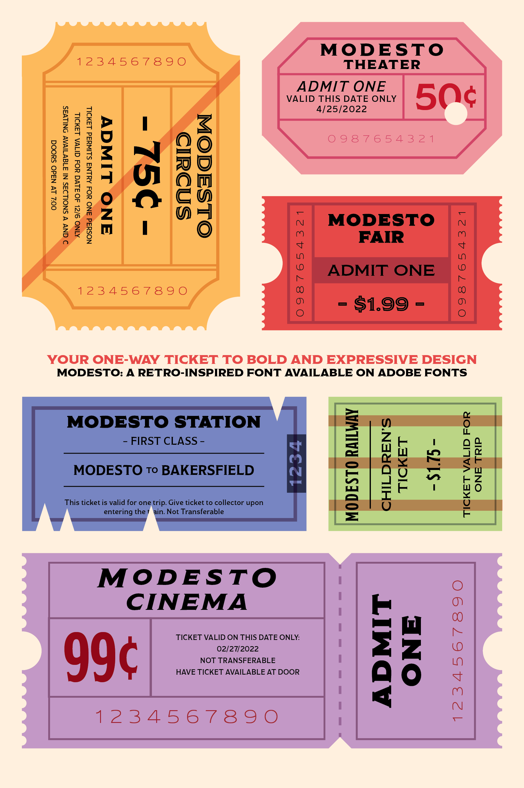
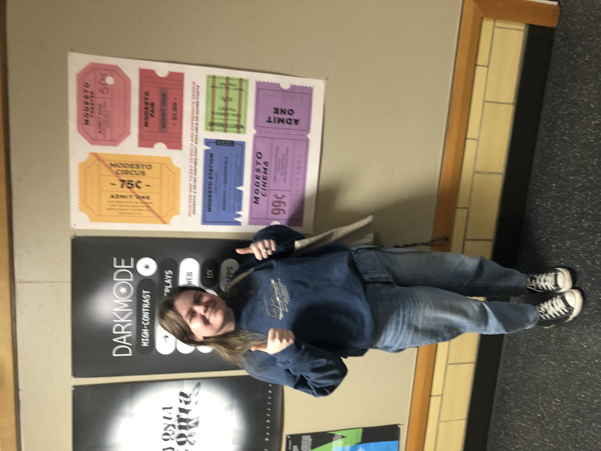

Modesto
This poster was created to show off the unique capabilities of the Modesto typeface. For this poster, I chose to reflect the history of the type, which was inspired by the typefaces seen on circus posters, as well as signs at the Modesto train station. For this piece, I designed a variety of tickets; each inspired by vintage railroad, movie, and circus tickets.
The back of the poster showcases the type itself, in the variety of different weights and styles that it comes in. This poster was made using Adobe Illustrator and InDesign.


